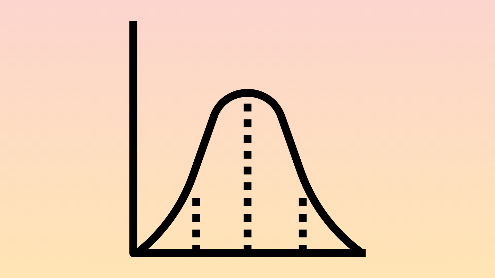
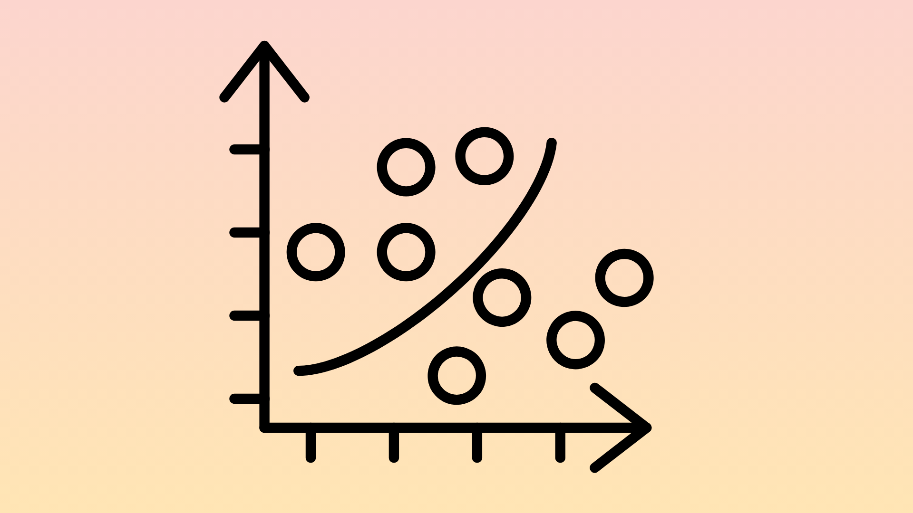
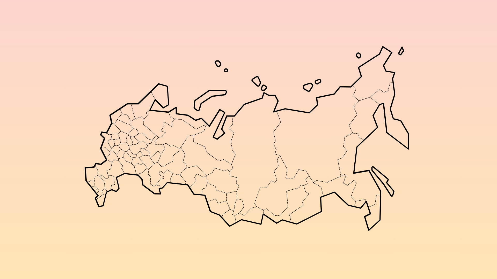

1. Theoretical Framework
IKD disusun berdasarkan empat dimensi yaitu pendidikan, kesehatan, ekonomi, lingkungan dan perumahan
2. Data Selection
Sumber data yang digunakan yaitu point of interest, citra satelit, dan official statistics
3. Preprocessing Data
Citra satelit : cloud selection, cloud masking, dan median reducing. POI : Geocode, data duplikasi, dan data luar area lokus akan dihapus

4. Normalisation
Menggunakan metode min-max

5. Multivariate Analysis
Menggunakan analisis faktor
6. Weighting and Agregation
Terdapat 4 skenario pembobotan
7. Uncertainty Analysis
Membandingkan korelasi Spearman dan rata-rata perubahan rangking observasi dari skenario yang disusun

8. Visualisation of the Rules
Peta tematik, grafik, dan tabel